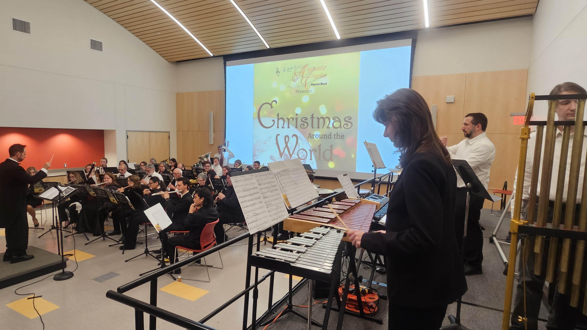

Join the Band!
The Augusta Curtis Concert Band has two seasons per year: spring and winter.
During these times we rehearse every Monday night (excepting federal and school
holidays) from 7:00 to 9:00 pm in the lower level of the Augusta Curtis Cultural
Center. Our concerts are in June and December, typically with dress rehearsals on
Tuesdays and concerts on Wednesdays. Both dress rehearsals and concerts take place
at 6:00 pm in the Meriden Public Library.
There is no audition required and we are elated to welcome new members!
The Augusta Curtis Concert Band welcomes all musicians who can play:
- Piccolo
- Flute
- Oboe
- Bassoon
- Clarinet
- Bass Clarinet
- Alto Saxophone
- Tenor Saxophone
- Baritone Saxophone
- French Horn
- Trumpet
- Trombone
- Bass Trombone
- Euphonium
- Baritone Horn
- Tuba
- String Bass
- Battery Percussion
- Mallet Percussion
at grade level three and higher.
Augusta Curtis Cultural Center
Meriden Public Library
